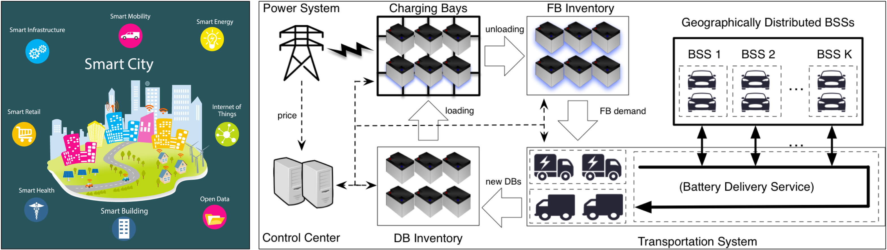
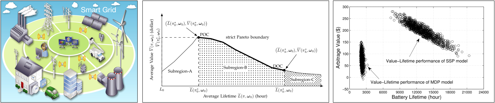

Research Description by Topics
1. Transportation Electrification and Smart Mobility for Sustainable Cities
The concept of smart cities is an urban development vision aiming to improve the cities’ sustainability and the citizens’ quality of life. By 2050, 70% of the world's population is projected to live and work in cities, with transportation as major constituent. From the perspective of transportation networks, electric vehicles have significantly higher energy efficiency when compared to gasoline- and diesel-fueled vehicles, which are widely believed to become mainstream in the coming decades for the sake of substainability. From the perspective of power networks, however, due to the rising charging demand from electric vehicles, the current power grids will be under strain in the absence of appropriate infrastructural and methodological improvement. As a result, two orginally separated large-scale networks, i.e., the transportation networks and the electric power networks, will become increasingly correlated both in their design and operation, which yields many new challenges and requires a substantial research.
We are interested in all kinds of applications in smart cities, but primarily focus on the nexus of transportation and energy. We have been working on smart homes, smart buildings, and smart power grids, in which charging and discharging scheduling of electric vehicles plays a very important role. In particular, we investigate the planning and operation of energy refueling infrastructures for electric vehicles (including battery-swapping mode and plug-in charging mode) in smart cities. Meanwhile, we are also interested in mobility-as-a-service (e.g., DiDi Chuxing, Uber and Lyft) and mobility-on-demand systems based on autonomous electric vehicles. We believe that such new applications and business models will be a very important part of energy-transportation nexus in future smart cities.
|  |
L. Ni, B. Sun, X. Tan and D.H.K. Tsang, “Online Price-based Vehicle-to-Station Recommendations for EV Battery Swapping”, accepted by IEEE International Conference on Smart Grid Communications (IEEE SmartGridComm 2018).
X. Tan, B. Sun, Y. Wu and D.H.K. Tsang, “Asymptotic Performance Evaluation of Battery Swapping and Charging Station for Electric Vehicles”, accepted by Performance Evaluation (Elsevier), December 2017. [ArXiv Preprint]
X. Tan, G. Qu, B. Sun, N. Li, and D.H.K. Tsang, “Optimal Scheduling of Battery Charging Stations Serving Electric Vehicles Based on Battery Swapping”, IEEE Transactions on Smart Grid, to appear. [PDF]
B. Sun, X. Tan, and D.H.K. Tsang, “Optimal Charging Operation of Battery Swapping and Charging Stations with QoS Guarantee“, IEEE Transactions on Smart Grid, to appear. [PDF]
W. Li, X. Tan, and D.H.K. Tsang, “Smart Home Energy Management Systems Based on Non-Intrusive Load Monitoring“, in Proceedings of IEEE International Conference on Smart Grid Communications (IEEE SmartGridComm 2015), Nov. 2015. [PDF]
S. Agheb, X. Tan, and D.H.K. Tsang, “Model Predictive Control of Integrated Room Automation Considering Occupants Preference“, in Proceedings of IEEE International Conference on Smart Grid Communications (IEEE SmartGridComm 2015), Nov. 2015. [PDF]
2. Flexibility and Uncertainty Management in Smart Power Grids
One of the central issues confronting grid operators is that the current design of power distribution system is unaccustomed to intermittency or uncertainty, a major characteristic of distributed energy resources (DERs) such as wind and solar. In the absence of effective tools and methodologies to manage high levels of DERs, the power grid will experience frequency and voltage variations, overloads of transformers and transmission lines, phase load imbalances, and other variations from operating standards of power grids. Given these challenges, new tools and methodologies must be developed for the technical and economic management of power grids with high penetration of DERs.
A promising solution to cope with the uncertainty of DERs is the integration of distributed battery energy storage (BES), or the coordinated management of an ever-growing number of electric vehicles (EVs). The fundamental idea is to leaverage the flexibility associated with the charging and/or discharging of BES and EVs to accomodate the uncertainty brought by DERs. In recent years, we have been working on many problems regarding planning and operation of BES. We propose new models and algorithms for analyzing the economic and lifetime performance of distributed BES systems in smart power grids. We also study how to integrate renewable energy in future smart power grids with EV battery charging stations. Meanwhile, we have also developed novel distributed algorithms for the energy management of cooperative microgrids with integration of BES.
|  |
B. Sun, X. Tan, and D.H.K. Tsang, “Eliciting Multi-dimensional Flexibility from Electric Vehicles: A Mechanism Design Approach”, accepted by IEEE Transactions on Power Systems, July 2018.
T. Liu, B. Sun, X. Tan, and D.H.K. Tsang, “Market for Multi-Dimensional Flexibility with Parametric Demand Response Bidding”, in Proceedings of 49th North American Power Symposium, Sept. 2017.
X. Tan, Y. Wu and D.H.K. Tsang, “Pareto Optimal Operation of Distributed Battery Energy Storage Systems for Energy Arbitrage under Dynamic Pricing”, IEEE Transactions on Parallel and Distributed Systems, Vol. 27, No. 7, 2103-2115, July 2016. [PDF]
X. Tan, Y. Wu and D.H.K. Tsang, “A Stochastic Shortest Path Framework for Quantifying the Value and Lifetime of Battery Energy Storage under Dynamic Pricing”, IEEE Transactions on Smart Grid, vol. 8, no. 2, pp. 769-778, March 2017. [PDF]
B. Sun, Zhe Huang, X. Tan, and D.H.K. Tsang, “Optimal Scheduling for Electric Vehicle Charging with Discrete Charging Levels in Distribution Grid”, IEEE Transactions on Smart Grid, to appear. [PDF ]
T. Liu, X. Tan, B. Sun, Y. Wu, and D.H.K. Tsang, “Energy Management of Cooperative Microgrids: A Distributed Optimization Approach“, International Journal of Electrical Power and Energy Systems, to appear. [PDF]
W. Li, X. Tan, B. Sun, and D.H.K. Tsang, “Optimal Power Dispatch of a Centralized Electric Vehicle Battery Charging Station with Renewables”, IET Communications, to appear.
3. Edge/Fog Computing, Internet of Things and Vehicular Networks
Edge/Fog computing is a decentralized computing infrastructure in which data, computation, storage and applications are distributed in the most logical, efficient place between the data source and the cloud. Edge/Fog computing essentially extends cloud computing and services to the edge of the network, bringing the advantages and power of the cloud closer to where data is created and acted upon. The goal of edge/fog computing is to improve efficiency and reduce the amount of data transported to the cloud for processing, analysis and storage.
With the development of IoT and 5G communication, e.g., tremendous networked and heterogeneous devices in smart cities such as connected vehicles, we have an excellent opportunity to bring the ‘cloud’ closer to the edge and users as ‘fog’. Previously, we have worked on the optimal resource allocation for LET-A downlink with heterogeneous traffic types. Recently, we start to investigate many interesting computing and radio resource allocation problems in edge/fog computing systems in mobile and vehicular networks.
 |
Y. Wu, L. Qian, H. Mao, X. Yang, H. Zhou, X. Tan, and D.H.K. Tsang, “Secrecy-Driven Resource Management for Vehicular Computation-Offloading Networks”, IEEE Network, vol. 32, no. 3, pp. 84-91, June 2018.
S. Niafar, X. Tan, and D.H.K. Tsang, “Optimal Downlink Scheduling for Heterogeneous Traffic in LET-A Based on MDP and Chance-Constrained Approaches”, ACM Springer Mobile Networks and Applications (MONET) Journal, 2015. [PDF]
S. Niafar, X. Tan and D.H.K. Tsang, “The Optimal User Scheduling for LTE-A Downlink with Heterogeneous Traffic Types”, [invited paper], in Proceedings of 10th International Conference on Heterogeneous Networking for Quality, Reliability, Security and Robustness (Qshine 2014), Rhodes, Greece, 2014. [PDF]